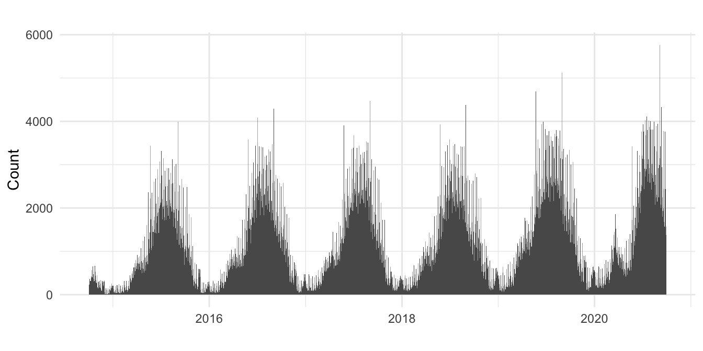
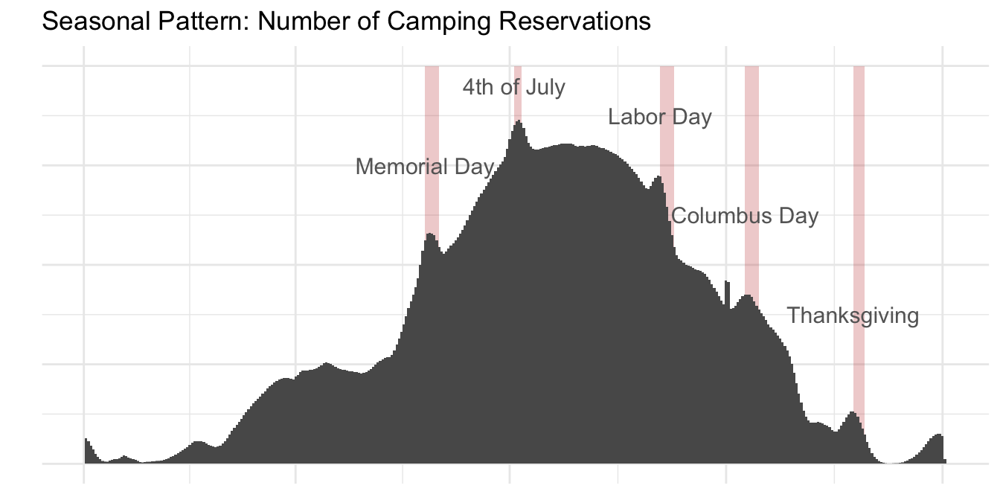
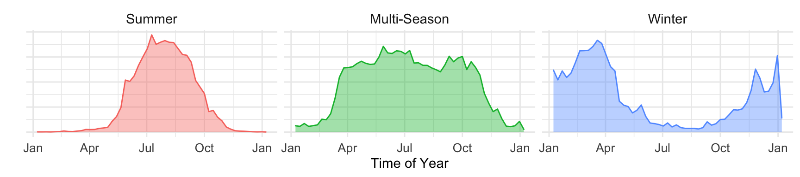
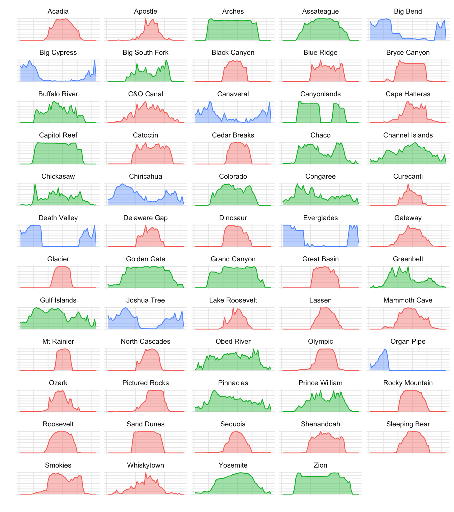

The US Department of the Interior makes many of its services and activities available through the website Recreation.gov. This includes everything from camping reservations to park passes and event tickets. Data associated with each of these transactions is stored in the Recreation Information Database (RIDB), and made available for download here.
This write-up summarizes an analysis of data gathered from these transactions for fiscal years 2014 through 2020 (however data are available back to FY2006). The analysis includes only data associated with National Park camping reservations which, as can be seen in the table below, is a relatively small fraction of the overall data. Still, this does include more than 2.6M reservations over a span of six years.
Before diving into analysis details it is instructive to first inspect the data at a high level, as in the histogram below. This plot shows the start date for camping reservations at all of the National Parks over the full span of the dataset. The most obvious pattern evident in this chart is the pervasiveness of the summer camping season, marked by six large humps. Next, one might notice the high-frequency oscillations superimposed on these humps, which reflects the fact that more people camp on the weekend. A more careful inspection reveals regular spikes in the data corresponding to specific holidays like Memorial Day, July 4th, and Labor Day.
| Fiscal Year | Reservations | NPS Camping |
|---|---|---|
| 2020 | 5,114,789 | 501,834 |
| 2019 | 3,479,643 | 476,082 |
| 2018 | 3,480,766 | 424,328 |
| 2017 | 3,303,533 | 430,476 |
| 2016 | 2,980,714 | 407,875 |
| 2015 | 2,949,219 | 361,368 |
| TOTAL | 21,308,664 | 2,601,963 |

If we take a closer look at the seasonal patterns identified in the section above, some interesting details start to emerge. For example, in the plot below we show the seasonal pattern aggregated from the dataset, derived from a seasonal decomposition of the camping data. Here, Memorial Day, July 4th, and Labor Day are easy to spot, as are Columbus Day, Thanksgiving and even New Years. The latter two holidays aren’t conventionally associated with camping trips, but we will revisit this point later.
The table at right shows the result of a weekly decomposition of three different variables available from the data: camping, first day, and day booked. The table confirms what we already suspected, that there are more campers on the weekend and fewer in the middle of the week. It also shows that most camping trips begin on Friday and, interestingly, camping reservations are made frequently on Mondays and Fridays, but less so on Saturdays.
| Day | Camping | First Day | Day Booked |
|---|---|---|---|
| Mon | -0.677 | -0.3374 | 1.3613 |
| Tue | -0.752 | -0.9777 | 0.0986 |
| Wed | -0.747 | -0.7782 | -0.5903 |
| Thu | -0.488 | -0.2504 | 0.2453 |
| Fri | 1.235 | 2.0292 | 0.8004 |
| Sat | 1.619 | -0.0609 | -1.7494 |
| Sun | -0.189 | 0.3753 | -0.1660 |

The seasonal pattern above provides some subtle hints that there is still more to learn from the data. For example, we noted the intriguing rise in camping reservations on Thanksgiving and New Years, holidays that aren’t conventionally associated with camping trips. There is also an intriguing shoulder in the Springtime visible in this plot.
To help facilitate a closer inspection of the data, we can look at the seasonal trend for each of the 61 parks or 139 campgrounds available in the data. In fact, we can simplify this with the application of kmean clustering on the seasonal trend. The result is three unique groups: Summer, Multi-season, and Winter. The Summer group most closely resembles the conventional view of summertime camping trips. The Multi-Season group includes parks in locations with more moderate climates such that the camping season extends from Spring through Fall. The Winter group includes parks in hot climates where the camping season is actually the complete opposite of conventional wisdom. In fact, we can see in the plot below that the Winter group is the primary source of camping spikes on Thanksgiving and New Years (The data show that Death Valley tends to be completely booked over New Years!).

